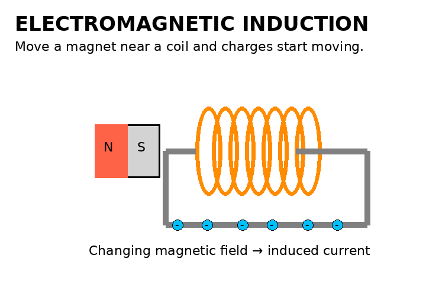

States of Matter
Compare particle spacing and motion in solids, liquids, and gases.
Use these topic hubs alongside the grade pages. Each concept is introduced simply and then revisited with more depth in later grades.
States, particles, physical properties, density, mixtures, changes of state, and chemical change.

Compare particle spacing and motion in solids, liquids, and gases.

Physical changes keep the same substance; chemical changes produce new substances.
Atoms, nuclei, protons, neutrons, electrons, ions, and electric charge.

Build the foundation for elements, isotopes, ions, bonding, and chemistry.

Atoms become charged when they gain or lose electrons.
Progress from everyday forces to force diagrams, acceleration, momentum, and dynamics.

Inertia, F = ma, and equal-and-opposite interaction forces explained visually.
Elements, compounds, reactions, equations, quantities, solutions, gases, bonding, and energy.

Chemical reactions rearrange atoms into new combinations while conserving atoms.
Current, voltage, resistance, circuits, magnetic fields, and electromagnetic induction.

Visualize moving charge in a closed circuit.

A changing magnetic field can induce an electric current.